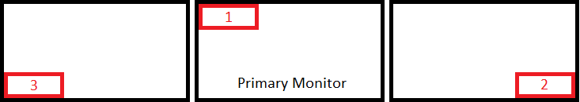

Position coordinates are measured in pixels starting from top-left corner of your primary monitor. Active position coordinates are used when the game is active and inactive coordinates when the game is alt-tabbed. Use the same numbers for both fields if you don't want to move the overlay when the game is alt-tabbed. To have the overlay positioned in secondary monitor right to your primary monitor increase the width, to move the overlay to left monitor relative to your primary monitor decrease the width to negative value. Lets have a look at the following example:

Overlay width is always 716 pixels and height normally is 200 pixels but may be extended up to 240 pixels to show additional message. Given that all 3 monitors have the resolution of 1920 x 1080 pixels then to position overlays like shown in the image the coordinates would be following.
- 1. Left: 0, Top: 0
- 2. Left: 3124 (2 x 1920 - 716), Top: 840 (1080 - 240)
- 3. Left: -1920 (0 - 1920), Top: 840 (1080 - 240)